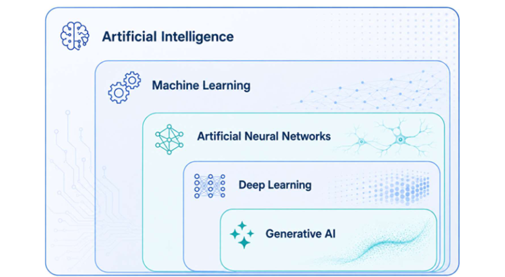
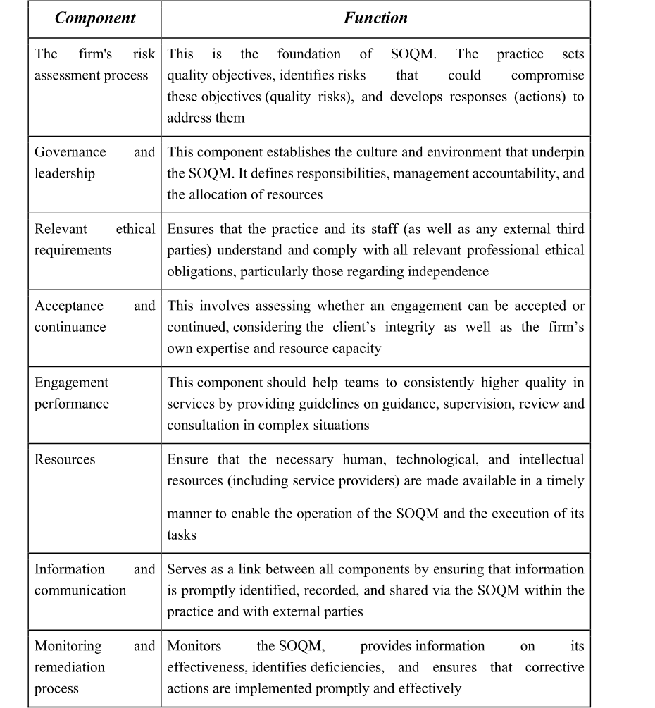

The theoretical foundations form the conceptual basis of this paper and provide context for the key technological, regulatory, and practical frameworks. First, AI and its key subfields are explained. Subsequently, AI is examined in the context of auditing. The focus is particularly on historical technological developments, selected example tools from major auditing firms, and market forecasts regarding the future significance of AI in auditing.
Furthermore, quality management within auditing firms is examined. To this end, audit quality and quality assurance systems are first explained. Subsequently, ISQM 1 is presented as an international framework, IDW QMS 1 as the German implementation, and PwC’s QMS is illustrated using the transparency report as a practical example. This lays the groundwork for analysing the impact of AI on quality management processes in audit firms in the remainder of this research.
2.1 What is AI?
The topic AI is something that deeply integrated into society in the last year, especially through the release and rise of OpenAI’s ChatGPT. There are many other terms that we often hear and fall under this field of research that will be described later on in this chapter. But the term of “Artificial Intelligence” itself was coined in 1956 during the “Dartmouth Summer Research Project on Artificial Intelligence” at Dartmouth College, organized by Marvin Minsky and John McCarthy (vgl. Haenlein und Kaplan 2019: 3). Still, there is no existing universal used definition for AI to this day. One example is defined by the European Commission in the EU AI Act:
‘AI system’ means a machine-based system that is designed to operate with varying levels of autonomy and that may exhibit adaptiveness after deployment, and that, for explicit or implicit objectives, infers, from the input it receives, how to generate outputs such as predictions, content, recommendations, or decisions that can influence physical or virtual environments.1
However, AI is not a single uniform technology, but rather an umbrella term that includes different methods and levels of complexity (see Fig. 1). First of all, it can be divided further into three stages of development based on its level of capability. The form that has been practically implemented to date is known as Artificial Narrow Intelligence , also referred to as weak AI. It is specialized in clearly defined areas of task and can only match or exceed human performance within these specific fields of application. A stage of development beyond this is Artificial General Intelligence . From this stage on, we speak of strong AI, which would no longer be limited to individual tasks but could be flexibly deployed in various fields, achieving a level of performance comparable to or superior to that of humans (Haenlein and Kaplan, 2019, p. 16; Mockenhaupt, 2021, pp. 52–53). Finally, the most far-reaching form is Artificial Super Intelligence . It describes a hypothetical form of AI that comprehensively surpasses human capabilities, would be universally applicable, and is sometimes associated with the idea of having its own consciousness (Haenlein and Kaplan, 2019, p. 16).

2.1.1 Machine Learning
Machine learning (ML) can be understood as a subfield of AI, which serves as an important part to imitate Intelligence, the learning, and is based on statistical methods. Here, systems learn from data and use that information to identify patterns, relationships, or decision-making rule. Unlike purely rule-based methods, models are not explicitly programmed for every single situation, but are trained and optimized by using examples or experience. The goal is to later apply the learned structures to new data, thereby enabling predictions, classifications, or decisions (Alpaydin, 2022, pp. 1–4).
A central form is supervised learning , where a model is developed using training data that already contains both input values and the corresponding known target values. The model learns from these examples the relationship between the input variables and the desired outcome. Once training is complete, it can be applied to predict unknown target values in new datasets. A distinction is made between regression methods, in which numerical values are predicted, and classification methods, in which data is assigned to specific categories (Alpaydin, 2022, pp. 10–11; Janiesch et al., 2021, p. 687). In unsupervised learning , however, there are no predefined target values or classes. The system analyses the available data independently to identify structures or reoccurring aspects within it. A typical example of an applications is clustering, in which similar objects are grouped together and outliers can be identified (Alpaydin, 2022, p. 11; Bishop, 2006, p. 3). Reinforcement learning is based on a different principle. Here, a system learns through repeated interaction with its environment. It receives information about the current state, possible actions, and an overarching goal. By trying out different action options and evaluating their consequences, the model learns which decisions generate the greatest benefit or the highest reward in the long term (Alpaydin, 2022, pp. 11–12; Sutton and Barto, 2014, pp. 1–3).
2.1.2 Artificial Neural Networks
Artificial neural networks (ANNs) are computational networks modelled after biological neural structures that technically replicate, in simplified form, the decision-making processes of the human or animal nervous system. They do not constitute an exact simulation of biological processes, but rather an abstract model of interconnected computational units. Unlike classical digital or analog computers, their significance lies primarily in their architecture. While conventional algorithms are often geared toward clearly defined systems of equations and specific problems, ANNs operate using simple computational operations and can therefore also be applied to nonlinear or stochastic problems that are difficult to describe mathematically. A key feature of artificial neural networks is their ability to self-organize. They do not need to be completely reprogrammed for every single problem, but can adapt based on their structure and the data they process. As a result, they are particularly well-suited for tasks such as pattern recognition, speech recognition, diagnosis, forecasting, filtering, and control. At the same time, however, ANNs are not a universal substitute for classical methods, as clearly defined deterministic problems can often be better solved using traditional mathematical methods. Their strength lies primarily in complex, poorly structured, or uncertain problems (Graupe, 2013, pp. 1–3).
2.1.3 Deep Learning
The subfield of Deep Learning (DL) is a very prominent and powerful type of ML which is based on ANNs (Bishop and Bishop, 2024, p. 1). For a long time, traditional ML methods relied on manually designed feature extraction when processing raw data such as images, speech, or text. Developing suitable feature extractors required considerable human expertise, as raw data first had to be converted into a form that could be used by a learning algorithm for pattern recognition or classification. DL can be seen as a response to this limitation, as DL models do not process relevant representations solely on the basis of manually defined features, but instead learn them from the data themselves across multiple processing layers. The individual layers map increasingly abstract features, which enables the recognition of complex patterns by the algorithm. This makes it possible for them to process raw data without the need for fully manually developed features. DL thus forms a central foundation for modern AI applications in data-intensive fields (LeCun et al., 2015, p. 436).
Applications of DL are particularly prevalent in fields where complex, unstructured, or high-dimensional data must be processed. The field of computer vision , for example, deals with the automated analysis of visual information and encompasses tasks such as object recognition, object detection, and classification. Natural language processing (NLP) deals with the automated processing of natural language, whereby probabilistic language models are frequently used due to the ambiguity of human language. Speech recognition aims to convert spoken language from acoustic signals into word sequences as accurately as possible. Finally, recommendation systems serve to predict suitable content or products for users and are primarily used in online advertising or social networks (vgl. Goodfellow et al. 2016: 447–474). DL has also been applied across various other domains, including practical examples like medical diagnosis and the analysis of protein structures (Bishop and Bishop, 2024, pp. 2–4).
As arguably the best-known application of DL, generative AI (GenAI) has made significant progress in recent years. GenAI refers to AI systems capable of generating new content such as text, images, or other media formats. This is based on generative models that are based on deep neural networks and recognize patterns and structures in the underlying data during training. On this basis, they can then create new content that exhibits characteristics similar to those of the training data. Generative AI encompasses various forms, each tailored to specific tasks or media formats (Feuerriegel et al., 2024, pp. 111–112; Sengar et al., 2024, p. 23663). A cornerstone of this development is the emergence of large language models as a subcategory of GenAI, especially autoregressive models. They represent a central enabler of NLP applications and, therefore, of GenAI applications as we know them (Bishop and Bishop, 2024, p. 5). Through their capability to produce content at a human-like level, GenAI represents a key driver for the transformation of work processes and forms of communication in many areas of human life(vgl. Feuerriegel et al. 2024: 111–112).
2.1.4 Ethics of AI
Advances in AI bring with them a wide range of challenges, which are particularly evident in the ethical realm. Algorithms such as those used in DL, in particular, pose challenges regarding the transparency and interpretability of their decision-making processes. This is primarily due to their multi-layered structure, where the processes occurring in the hidden layers are particularly difficult to understand. This is known as the so-called black-box problem of AI (Coeckelbergh, 2020, pp. 116–117; Mockenhaupt, 2021, p. 73). In addition, it can also be important for companies to protect their trade secrets and not disclose them, which includes the algorithms they use. Thus, further complicating trancsparency (Mockenhaupt, 2021, p. 76). This can also make ensuring accountability to people a complicated matter when there is a lack of transparency regarding the processes within the AI (Coeckelbergh, 2020, p. 117). So, this topic of moral and legal responsibility for AI decisions also raises questions. On the one hand, today’s AI lacks key aspects of accountability due to its lack of consciousness and self-reflection. On the other hand, assigning responsibility to developers and users is also difficult because of the complexity of AI as well its’ development and its’ ability to learn on its own (Coeckelbergh, 2020, pp. 112–116; Mockenhaupt, 2021, p. 99). Furthermore, Algorithms can also develop biases based on the data used and the training it undergoes. Alternatively, AI results can be deliberately manipulated or misinterpreted due to user bias, and consequently act in a discriminatory manner toward certain individuals and groups (Mockenhaupt, 2021, pp. 78– 80). In addition, AI also poses risks due to its potential for malicious use. Key concerns in this regard include data protection, cybersecurity, which can also pose a direct physical security risk due to autonomous systems, and the misuse of AI for criminal activities such as fraud schemes (Coeckelbergh, 2020, pp. 97–106). AI has already profoundly changed the daily lives of many people. This raises the final ethical question of what social, political and environmental impacts its use will have, both now and in the future (Coeckelbergh, 2020, pp. 136–141).
These ethical risks and challenges of AI lead to various fields of research that are trying to find solutions to these problems and enable an ethical use of this technology in the future, which all together constitute under the research field of Ethical AI . One example of how Ethical AI can be translated into practical requirements is the European Union’s (EU) Ethics Guidelines for Trustworthy AI, which define seven core requirements for trustworthy AI systems. AI systems should be human-controllable, technically robust, secure, and transparent. In addition, data protection, data quality, fairness, and non-discrimination must be ensured. The guidelines also take into account social and environmental impacts, as well as clear accountability mechanisms (European Commission, 2019). Furthermore, the EU was also the first one worldwide to publish a legal framework to guide the development of AI. The EU AI Act is a risked-based approach that should not only set legal and ethical boundaries for AI development and deployment, but also should define a pathway to foster investment and innovation into AI in the EU states. A key element of this legal framework is the requirement to assess and certify high-risk AI systems. High-risk AI refers to AI systems that could pose significant risks to health, safety, or fundamental rights. As such, they are subject to strict requirements regarding risk management, data quality, documentation, transparency, human oversight, robustness, and cybersecurity (European Commission, 2026).
The field of Explainable AI (XAI) is one of the areas under Ethical AI and addresses possible solutions to problems with transparency and explainability (Mockenhaupt, 2021, p. 77). Arrieta et al. (Barredo Arrieta et al., 2020, p. 85) describes XAI as follows: “Given an audience, an explainable Artificial Intelligence is one that produces details or reasons to make its functioning clear or easy to understand.” One of the purposes of explainability is to provide a transparent rationale for AI decisions, particularly in the case of unexpected or potentially discriminatory outcomes, thereby fostering trust, fairness, and regulatory accountability. In addition, XAI supports the monitoring, troubleshooting, and further development of models and can help generate new insights through the use of complex systems (Adadi and Berrada, 2018, pp. 52142–52143). Overall, XAI represents a key concept in Responsible AI , which refers to an approach that requires adherence to core ethical principles, such as fairness, transparency, accountability, and data protection, in the practical implementation of AI systems (Barredo Arrieta et al., 2020, p. 108).
2.2 Development of AI in the Audit Profession
The history of AI is nothing that just appeared with the rise of GenAI models like ChatGPT. It can be traced back to the 1980’s where the possibility of using expert systems came into the interest of researchers and accounting firms (Messier and Hansen, 1987, pp. 97–101). One early example of these systems is KPMG Peat Marwick’s Bank Failure Prediction System which was based on ANNs (Brown, 1991, p. 17). Even before the release of OpenAI’s ChatGPT, major accounting firms were working on new AI applications for their own use. In 2015, Deloitte received the “Audit Innovation of the Year” award for its AI tool Argus, which is designed to analyse and structure unstructured data sets for clients (Deloitte, 2022). In 2017, PricewaterhouseCoopers (PwC) then won the same price with the introduction of its AI bot “GL.ai,” which is designed for anomaly detection in large datasets (PwC, 2023a). Similarly, leading accounting firms responded quickly to the rise of GenAI by developing and implementing their own solutions. Examples include PwC’s ChatPwC, which was launched in the spring of 2023; Deloitte UK’s PairD, launched in October 2023; and the integration of GenAI into KPMG’s AI platform, Clara, in the summer of 2024 (Deloitte, n.d.; KPMG, 2024; Microsoft, 2024).
In a survey from the World Economic Forum in, which interviewed over 800 executives and experts from the information and communications technology sector, it was expected by them that in 2025 around 30 percent of corporate audits will be performed by AI (World Economic Forum, 2015, pp. 4, 22). While this goal is maybe not achieved in 2026, accounting firms still invest significantly in an AI transformation. In 2023 PwC US announced to invest $1 billion dollars into their AI capabilities over the following 3 years (PwC, 2023b). In the same year competitor KPMG announced to invest $2 billion dollars for AI and cloud services in a cooperation with Microsoft (KPMG, 2023; Reuters, 2023).
2.3 Standards for Quality Management in Accounting Firms
Ensuring high audit quality has been a central concern of the auditing industry for decades. As economic processes have grown more complex and demands on the reliability of financial information have increased, systematic quality assurance within auditing firms has become increasingly beneficial, according to DeFond and Zhang's (2014, pp. 275). DeFond and Zhang (2014, p. 281) define higher audit quality as "greater assurance that the financial statements faithfully reflect the firm's underlying economics, conditioned on its financial reporting system and innate characteristics."
2.3.1 The Development of International and German Standards
The “Statement on Quality Control Standards No. 1” by the American Institute of Certified Public Accountants (AICPA), published in 1979, is one early example of a framework that should support in ensuring quality in audit. It has established that audit firms must have a formal system of quality control in place. This created one of the earlier national, systematic foundations for quality management in the auditing profession (AICPA, 1979). The Enron scandal in 2001 and other cases such as WorldCom and Parmalat acted as catalysts for a global systemic change. The failure of the original self-regulation and the resulting international pressure stemming from the accounting scandals can be explained by a combination of structural opacity and a lack of accountability. This lack of transparency led to a loss of trust. The industry’s prevailing self-regulation through so-called peer reviews, in which firms reviewed themselves, was questioned it it’s sufficiency to prevent systemic audit errors. According to the Centre for Financial Reporting Reform (CFRR) of the World Bank Group, this was followed by major changes in quality standards and their regulation (CFRR, 2018, pp. 2–3). Following the initial national quality control standards, the International Auditing and Assurance Standards Board (IAASB) developed the International Standard on Quality Control 1 (ISQC 1), the first globally applicable standard for quality control systems in audit firms. The standard first came into effect on June 15, 2005 (International Federation of Accountants, 2006).
The initial ISQC 1 was developed to strengthen quality control that is essential for user confidence in the services provided by audit firms (IAASB, 2012, p. 1). The focus of ISQC 1 was on ensuring that audit firms established policies and procedures for six key elements of quality management, including leadership responsibility, ethical requirements, engagement acceptance and continuation, human resources, engagement performance, and monitoring (IAASB, 2006, para. 7). Over time, the IAASB identified several weaknesses in the existing system (PCAOB, 2024, p. 33). ISQC 1 was often perceived as a system that merely dealt with “standalone elements” rather than proactively managing quality (IAASB, 2021, p. 3). For this reason, affected companies have called for a more proactive approach that is also more flexibly scalable in light of the companies’ specific characteristics (IAASB, 2020b, p. 10). To address these issues, the IAASB approved a combined project in December 2016 to fundamentally revise some of its central standards (IAASB, 2020b, p. 4). One of it, the ISQM 1, was published as a draft for public exposure in February 2019 and took effect in its final version on December 15, 2022 (IAASB, 2020b, p. 4; PCAOB, 2024, p. 33).
The revised framework is built around a proactive, risk-based approach to quality management, in which quality objectives are defined, risks are identified, and targeted responses are developed, alongside a significant expansion of governance, communication, technology, and monitoring and corrective processes (IAASB, 2021, pp. 3–4). Central to this approach is the conception of quality management as an integrated "System of Quality Management" (SOQM), which is no longer treated as a separate compliance task but as part of the firm's operational management (IAASB, 2021, p. 3). ISQM 1 requires every firm performing audits, reviews, or other assurance and related services engagements to establish, implement, and continuously operate such a firm-wide SOQM (IAASB, 2020a, para. 5). Its overarching objective, as stated in para. 14, is to ensure that personnel perform their responsibilities in accordance with professional standards and that engagement reports issued by the firm are appropriate in the specific circumstances (IAASB, 2020a, para. 14). An objective linked to a broader public-interest perspective, like para. 15 emphasises that the consistent performance of quality engagements contributes to serving the public interest (IAASB, 2020a, para. 15). Among the structural changes introduced, two entirely new components have been added: the firm's risk assessment process mentioned above, as well as the "Information and Communication" component (IAASB, 2021, p. 8). Finally, the standard places significantly greater emphasis on accountability, with management bearing increased responsibility for the effectiveness of the system (IAASB, 2021, p. 16).
The SOQM is structured around eight interrelated components (IAASB, 2020a, para. 6; IAASB, 2021, pp. 9–10):

The shift toward risk-based quality management is not limited to the IAASB framework. In 2024, the Public Company Accounting Oversight Board (PCAOB) adopted QC 1000, replacing the previous quality control framework for registered public accounting firms in the United States (PCAOB, 2024, p. 1). Like ISQM 1, QC 1000 requires firms to establish a firm-wide SOQM addressing governance, risk assessment, and monitoring (PCAOB, 2024, pp. 5–6). If approved by the Securities and Exchange Commission, QC 1000 will take effect on December 15, 2025, with the first annual evaluation due by September 30, 2026 (PCAOB, 2024, p.11).
The IDW acts as the standard-setter for the German audit profession. Through the IDW QMS 1, the IDW sets out the professional view on how to design a legally compliant, risk-based QMS, adapting the international standard ISQM 1 to the practice of public accounting in consideration of the German and European legal frameworks as well as local professional practices. In doing so, IDW QMS adopts the risk-based approach as well as the scope of its eight components. It specifies the legal requirements for the “internal quality assurance system,” as referred to in German law. The German Statute of Auditors (WPO, ger: Wirtschaftsprüferordnung ) requires auditors to establish rules governing their entire professional practice to ensure compliance with professional obligations. While ISQM 1 focuses primarily on audit and assurance services, IDW QMS 1 extends the risk-based approach to all areas of activity to comply with the WPO. In summary, IDW QMS 1 serves as a “transition bridge” that translates the process-oriented logic of ISQM 1 into the more rule-based and comprehensive structure of German professional law (IDW, 2026, pp. 3, 8–9, 35, 56).
2.3.2 Application of QMS at PwC – An Illustrative Case
To illustrate how the requirements of ISQM 1 are applied in practice, this section draws on the publicly available transparency reporting of PwC. Their Transparency Report 2024/2025 provides limited but publicly accessible information on how the firm has structured its SOQM across governance, monitoring, technological resources, and network integration. The following discussion is based on disclosed information only and does not reflect access to internal firm documentation. It is therefore descriptive in character and is not intended to evaluate the effectiveness of PwC's quality management arrangements.
PwC’s quality approach is based on ISQM 1 as well as IDW QMS 1 and is implemented through the network-wide Quality Management for Service Excellence (QMSE) Framework. In accordance with ISQM 1 and QMS 1, it follows an objective-based approach designed to ensure that (1) the firm and its employees fulfill their responsibilities in accordance with professional standards and legal requirements, and (2) reports issued are appropriate under the circumstances. Both standards also extend management’s responsibility to include a proactive, ongoing assessment of the adequacy and effectiveness of the QMS. An efficient root-cause analysis is intended to quickly identify deficiencies and enable effective corrective actions. The approach is also consistent with the WPO, EU Regulation 537/2014, and the WP/vBP Code of Professional Conduct (PwC, 2025, pp. 12–15).
Based on ISQM 1 and IDW QMS 1, PwC pursues a total of 15 quality objectives. At its core, the primary focus is on ensuring that management establishes an effective QMS as an integral part of business operations, that all employees comply with PwC’s values as well as its ethical and legal standards, and that independence is maintained so that professional judgments are not compromised by bias or unauthorized influence. Subsequently, the conditions under which mandates and engagements are accepted are defined. Mandates are accepted only if potential conflicts of interest are manageable, new and existing services are developed in accordance with PwC’s purpose and values, and engagements are accepted only if PwC is willing, capable, and authorized to provide the relevant service. Another key focus is on the employees themselves. Staff is recruited, developed, and engaged in a way that supports the assurance strategy. Continuous training and professional development impart the necessary professional, technical, and social skills. Teams are assigned to engagements based on qualifications, experience, and availability, and performance is evaluated and compensated fairly and transparently. Finally, several objectives deal with the actual execution of projects. Appropriate technological resources support both the QMS and the operational aspects of project work. Teams are clearly managed, guided, and monitored. Specialized expertise is strategically integrated, and project-specific risks are identified and addressed through targeted quality controls (PwC, 2025, p. 16).
The 15 quality objectives form the basis for the organization of the entire SOQM, which covers all services provided by PwC in accordance with ISQM 1. Overall responsibility lies with the Management Board and the responsible members of the respective business units. Operational implementation within the Audit division is the responsibility of the Assurance Leader, supported by the Chair of the Management Board. Individual partners bear operational responsibility for defined areas of the SOQM and adapt to the system based on ongoing risk assessments. The Network Risk Management Policies harmonize risk management processes across the network and cover topics such as engagement acceptance, anti-money laundering, digital solutions, information security, sanctions, and cross-border engagements (PwC, 2025, pp. 17-19).
The Quality Management Process is the operational tool for systematically achieving these goals. It is designed to proactively identify and assess quality risks that could jeopardize the achievement of these 15 objectives. Based on the identified risks, targeted measures (actions) are developed and implemented within the process to ensure that the objectives are met. The Quality Management Process includes continuous monitoring of the effectiveness of these measures as well as root cause analysis in the event of deficiencies, to continuously improve the system and ensure the long-term achievement of objectives (PwC, 2025, pp. 18-19).